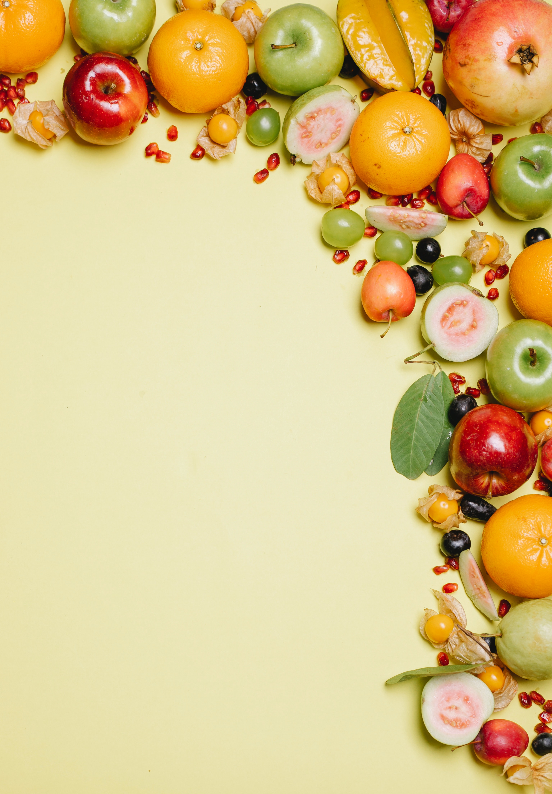

Startseite

Hier hast du die Möglichkeit, Ordnung in deine Einkaufsplanung zu bringen.
Erstelle ganz einfach verschiedene Einkaufslisten, finde in den unten aufgelisteten Kategorien die Produkte, die du benötigst oder suche schnell und unkompliziert selbst nach einem bestimmten Produkt.